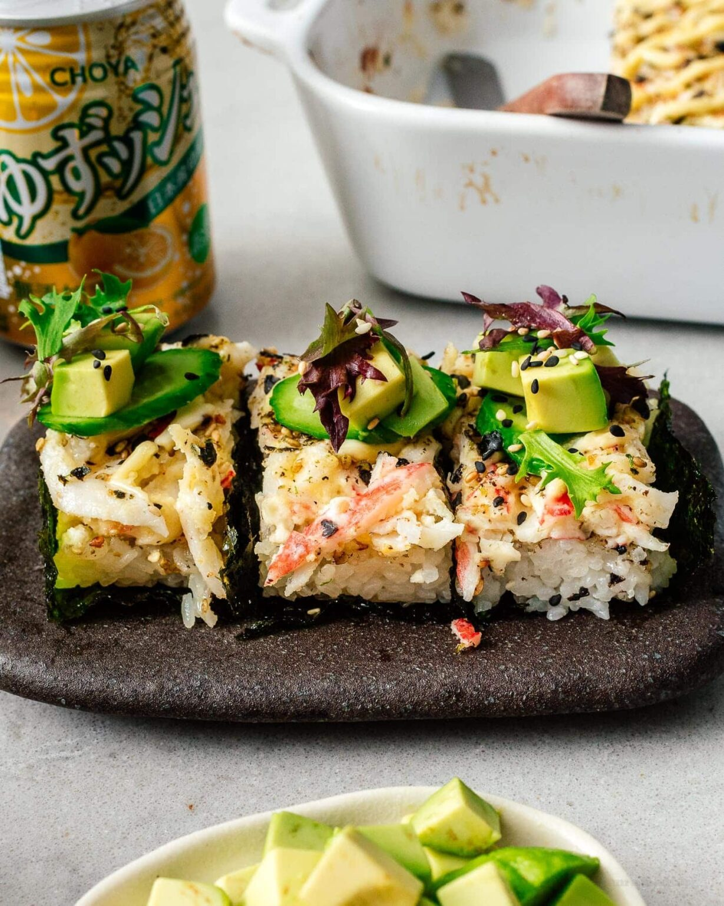

Sushi Bake Recipe

Description
Sushi bake came about as an alternative to sushi rolls. All the flavours of creative sushi rolls layered and baked into a warm and comforting delicious casserole, meant to be scooped into little sheets of roasted seaweed.
Like most casseroles, it is a home style dish meant to be shared with friends and family. It's easier than rolling lots of rolls and the scooping and sharing makes it fun and interactive. The best part is that you don't have to follow the recipe, you can get creative and add your favourite toppings!
Ingredients
- Sushi Rice - short-grain rice is the best for making sushi.
- Crab and other seafoods - imitation crab is a typical ingredient, along with salmon or any other seafood you like!
- Kewpie mayo and cream cheese - the cream cheese mixed with the seafood ingredients gets real melty and creamy.
- Furikake - a japanese rice seasoning made up of seaweed, sesame seeds, and other tasty bits.
Steps
- Cook the sushi rice, and after it's done cooking, add vinegar, sugar, and salt to make "sushi rice".
- Take the sushi rice mixture and spead it onto an oven safe dish and sprinkle with some furikake. Set it aside for now to work on the seafood mix.
- In a bowl, mix up some shredded chopped crab with cream cheese and Kewpie mayo and then spread it on top of the rice layer. Sprinkle more furikake on top of the seafood mix layer.
- Pop the sushi bake into the oven and bake until it starts to brown and bubble, and is heated through.
- Take it out of the over, and drizzle the top layet with extra kewpie mayo and sriracha.
- Take a spoon and scoop out a serving onto roasted seaweed.